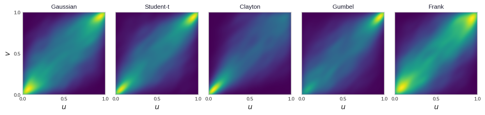

This post offers a concise and intuitive introduction to copula theory, explaining what copulas are, why they are useful, and how they are applied in finance. We’ll skip the heavy math and focus on the core ideas.
1 What are Copulas?
Have you ever tried to model the relationship between two or more variables, but found that they don’t follow a nice, clean multivariate normal distribution? Real-world data, especially in finance or insurance, is often messy. Variables can have different distributions (some normal, some skewed, some with fat tails), and their dependence can be more complicated than simple linear correlation.
This is where copulas come in. The word “copula” originates from Latin and means “link” or “tie” — and that’s exactly what they do: they link marginal distributions of individual variables together into a joint multivariate distribution, while capturing their dependence structure separately. This separation is the key idea: you can model each variable’s marginal distribution independently, and then use a copula to describe how the variables move together. This enables the modelling of complex dependencies - like the tendency of assets to crash together in a financial crisis (tail dependence) - without being constrained by assumptions like normality.
2 Sklar’s Theorem
Before we can state the theorem, we need a precise definition of what a copula actually is.
Definition (Copula)
A copula is a function \(C: [0,1]^d \to [0,1]\) that is the joint CDF of a random vector \((U_1,\ldots, U_d)\) where each \(U_k \sim\mathcal{U}(0,1)\).
Equivalently, \(C: [0,1]^d \to [0,1]\) is a copula if and only if it satisfies the following properties:
Grounded: \(C(u_1, \ldots, u_d) = 0\) if at least one \(u_k = 0\).
Uniform marginals: \(C(1, \ldots, u_k, \ldots, 1) = u_k\) for all \(k\) and \(u_k \in [0,1]\).
d-increasing (rectangularly increasing): For every hyperrectangle \(\prod_{k=1}^d [a_k, b_k] \subseteq [0,1]^d\) with \(a_k \leq b_k\), the C-volume is non-negative: \[
V_C\left(\prod_{k=1}^d [a_k, b_k]\right) = \sum_{v\in\{a_1, b_1\}\times\cdots\times\{a_d, b_d\}} (-1)^{|\{k: v_k = a_k\}|} C(v) \geq 0,
\]
Note that the third condition is the analogue of non-decreasingness for univariate CDFs and ensures that \(C\) assigns non-negative probability mass to every rectangle in \([0,1]^d\). Hence, in plain terms, a copula is simply a joint CDF on \([0,1]^d\) whose marginals are all \(\mathcal{U}(0,1)\).
With this machinery in place, we are ready for the central result of copula theory.
Let \(H\) be a \(d\)-dimensional joint CDF with marginals \(F_1, \ldots, F_d\). Then there exists a copula \(C: [0,1]^d \to [0,1]\) such that for all \((x_1, \ldots, x_d) \in \bar{\mathbb{R}}^d\),
Conversely, for any copula \(C\) and any CDFs \(F_1, \ldots, F_d\), the function \(H(x_1, \ldots, x_d) = C(F_1(x_1), \ldots, F_d(x_d))\) is a valid joint CDF with marginals \(F_1, \ldots, F_d\).
Sklar’s theorem has two profound consequences. First, every distribution — however exotic its marginals or dependence — admits a copula representation. Copulas are not a restricted model class; they provide an exact characterisation (unique when marginals are continuous) of all joint distributions. Second, continuity of the marginals pins down the copula uniquely, making the dependence structure an intrinsic property of the distribution rather than an artefact of parameterisation.
3 Copula Families
Sklar’s theorem guarantees that a copula exists, but to actually model data we need concrete parametric families. Two reference points bound the whole landscape. The independence copula\(\Pi(u_1,\dots,u_d)=\prod_k u_k\) describes mutually independent margins, while the Fréchet–Hoeffding bounds
mark the extremes of perfect negative (\(W\), the lower bound, attainable only for \(d=2\)) and perfect positive (\(M\)) dependence (Nelsen 2006). Every copula lives between these two surfaces. The parametric families below interpolate within this space, each emphasising a different shape of dependence — in particular tail dependence, the tendency of variables to take extreme values jointly.
Tail dependence
The lower and upper tail-dependence coefficients of a bivariate copula are \[
\lambda_L = \lim_{u\to 0^+}\frac{C(u,u)}{u}, \qquad
\lambda_U = \lim_{u\to 1^-}\frac{1 - 2u + C(u,u)}{1-u},
\] each lying in \([0,1]\). They measure the probability that one variable is extreme given that the other is — for example, the propensity of two assets to crash together (\(\lambda_L>0\)). This single quantity is what most sharply distinguishes the families below.
3.1 Elliptical copulas
Elliptical copulas are extracted (via the PIT) from elliptical distributions such as the multivariate normal and \(t\). They are parameterised by a \(d\times d\) correlation matrix \(R\), which makes them natural in high dimensions and easy to calibrate, but they are radially symmetric — they treat joint booms and joint crashes identically.
Gaussian copula(Li 2000): \(C_R^{\mathrm{Ga}}(\mathbf{u}) = \Phi_R\!\big(\Phi^{-1}(u_1),\dots,\Phi^{-1}(u_d)\big)\), where \(\Phi_R\) is the joint CDF of \(\mathcal{N}(\mathbf 0, R)\). It has no tail dependence (\(\lambda_L=\lambda_U=0\)) whenever \(|\rho|<1\): extremes decouple.
Student-\(t\) copula(Embrechts, McNeil, and Straumann 2002): adds a degrees-of-freedom parameter \(\nu>0\), giving symmetric tail dependence\(\lambda_L=\lambda_U = 2\,t_{\nu+1}\!\big(-\sqrt{\nu+1}\,\sqrt{1-\rho}/\sqrt{1+\rho}\big) > 0\). As \(\nu\to\infty\) it converges to the Gaussian copula. The extra parameter lets it capture joint extremes that the Gaussian misses, which is why it is the default workhorse in quantitative risk management (McNeil, Frey, and Embrechts 2015).
3.2 Archimedean copulas
Archimedean copulas are built from a single generator\(\psi:[0,1]\to[0,\infty]\), a convex, decreasing function with \(\psi(1)=0\): \[
C(u_1,\dots,u_d) = \psi^{-1}\!\big(\psi(u_1)+\cdots+\psi(u_d)\big).
\] A whole multivariate dependence structure is thus encoded by one univariate function and, typically, a single scalar parameter\(\theta\). This parsimony makes them ideal in low dimensions and allows them to model asymmetric tail behaviour that elliptical copulas cannot (Joe 1997; Nelsen 2006).
Clayton(Clayton 1978), \(\theta\in(0,\infty)\) with \(\psi(t)=\tfrac1\theta(t^{-\theta}-1)\): strong lower-tail dependence (\(\lambda_L = 2^{-1/\theta}\), \(\lambda_U=0\)). Models variables that crash together but decouple in booms; independence as \(\theta\to0\).
Gumbel(Gumbel 1960), \(\theta\in[1,\infty)\) with \(\psi(t)=(-\ln t)^\theta\): strong upper-tail dependence (\(\lambda_U = 2-2^{1/\theta}\), \(\lambda_L=0\)). An extreme-value copula, suited to joint maxima and upside clustering; independence at \(\theta=1\).
Frank(Frank 1979), \(\theta\in\mathbb{R}\setminus\{0\}\): symmetric and tail-independent (\(\lambda_L=\lambda_U=0\)), but unlike the Gaussian it permits negative dependence. Useful when dependence is strong in the middle of the distribution but absent in the tails.
Figure 1 makes these differences concrete. Each panel is the estimated copula density in \([0,1]^2\) for a different family, all calibrated to the same Kendall’s \(\tau = 0.5\) — so only the shape of the dependence differs, not its strength.
Code
from scipy.stats import gaussian_kde_tau_zoo =0.5_families = ['Gaussian', 'Student-t', 'Clayton', 'Gumbel', 'Frank']_n_zoo =8000def _make_copula(family, tau): p = tau_to_param(family, tau)if family =='Gaussian': return GaussianCopula(corr=p)if family =='Student-t': return StudentTCopula(corr=p, df=4)if family =='Clayton': return ClaytonCopula(theta=p)if family =='Gumbel': return GumbelCopula(theta=p)return FrankCopula(theta=p)# Evaluate each copula density on a fixed grid and show as a square viridis heatmap_g = np.linspace(0.005, 0.995, 140)_GX, _GY = np.meshgrid(_g, _g)_pos = np.vstack([_GX.ravel(), _GY.ravel()])fig, _axes = plt.subplots(1, 5, figsize=(11, 2.6), constrained_layout=True)for _ax, _fam, _i inzip(_axes, _families, range(5)): _uv = _make_copula(_fam, _tau_zoo).rvs(_n_zoo, random_state=100+ _i) _dens = gaussian_kde(_uv.T, bw_method=0.18)(_pos).reshape(_GX.shape) _ax.imshow(_dens, origin='lower', extent=[0, 1, 0, 1], cmap='viridis', aspect='equal', interpolation='bilinear') _ax.set_title(_fam, fontsize=10, color=ACADEMIC_COLORS['ink']) _ax.set_xticks([0, 0.5, 1]); _ax.set_yticks([0, 0.5, 1]) _ax.set_xlabel('$u$') _ax.tick_params(labelsize=8) _ax.grid(False)_axes[0].set_ylabel('$v$')for _ax in _axes[1:]: _ax.set_yticklabels([])plt.show()

Figure 1: Same dependence strength, five different shapes. Kernel-density estimate of 8,000 simulated \((u, v)\) points from each family, all calibrated to Kendall’s \(\tau = 0.5\). Clayton concentrates toward the lower-left corner (lower-tail dependence) and Gumbel toward the upper-right (upper-tail dependence); the Student-\(t\) thickens in both corners. The Gaussian and Frank copulas instead taper away from the corners — identical rank correlation, but no tail dependence.
All of this generalises beyond two variables: a \(d\)-variate copula is simply a distribution on the hypercube \([0,1]^d\), and the classic way to inspect one is the pairs plot, which lays out every bivariate projection at once. Figure 2 shows a 3-dimensional Student-\(t\) copula viewed this way — scatter clouds below the diagonal, their rank correlations above it.
Figure 2: A copula in three dimensions. Pairs plot of 3,000 draws from a 3-D Student-\(t\) copula (\(\nu = 4\)) with three deliberately different pairwise correlations. Lower triangle: each bivariate margin \((u_j, u_i)\), itself a valid 2-D copula. Diagonal: the uniform univariate margins. Upper triangle: the corresponding Spearman rank correlation (blue positive, red negative, sized by magnitude). The strong-positive, near-zero, and negative pairs give visibly different clouds — yet the \(t\)-copula’s tail dependence keeps mass in the corners even when the rank correlation is near zero.
In higher dimensions, a single Archimedean parameter is often too rigid and a single correlation matrix too symmetric; vine copulas(Bedford and Cooke 2002; Aas et al. 2009) overcome this by decomposing a \(d\)-dimensional copula into a cascade of bivariate ones, mixing families pair by pair. The choice of family is ultimately an empirical question, addressed by the estimation and goodness-of-fit tools discussed later.
4 The Probability Integral Transform
Definition (PIT)
Let \(X\) be a real-valued random variable with continuous CDF \(F_X\). The probability integral transform of \(X\) is \[
U = F_X(X).
\]
Theorem (PIT)
If \(F_X\) is continuous, then \(U = F_X(X) \sim \mathrm{Uniform}(0,1)\).
Proof sketch. For \(u\in[0,1]\), \[
\mathbb{P}(U \le u) = \mathbb{P}\big(F_X(X) \le u\big) = \mathbb{P}\big(X \le F_X^{-1}(u)\big) = F_X\big(F_X^{-1}(u)\big) = u,
\] using that continuity of \(F_X\) guarantees a well-defined (generalized) inverse and that \(F_X\) is non-decreasing, so \(\{F_X(X)\le u\} = \{X \le F_X^{-1}(u)\}\) almost surely. Hence \(U\) has the CDF of a Uniform\((0,1)\) random variable. \(\blacksquare\)
The converse (sometimes called the inverse PIT or quantile transform) is equally important: if \(U\sim\mathrm{Uniform}(0,1)\), then \(F_X^{-1}(U)\) has CDF \(F_X\). This is the basis of inverse-transform sampling that we will cover later.
This essentially means that the PIT is how the copula is extracted from a joint distribution. Given \(\mathbf{X}=(X_1,\dots,X_d)\) with continuous margins \(F_1,\dots,F_d\), applying the PIT componentwise, \[
U_j = F_j(X_j), \qquad j=1,\dots,d,
\] sends each marginal to Uniform\((0,1)\) while preserving the rank structure of \(\mathbf{X}\), since each \(F_j\) is monotone. The joint law of \(\mathbf{U}=(U_1,\dots,U_d)\) is, by definition, the copula \(C\) of \(\mathbf{X}\): \[
C(u_1,\dots,u_d) = \mathbb{P}(U_1\le u_1,\dots,U_d\le u_d) = F\big(F_1^{-1}(u_1),\dots,F_d^{-1}(u_d)\big).
\] This is exactly the content of Sklar’s theorem read “backwards”: the PIT is the constructive map that strips away the marginals, leaving only the copula.
In practice \(F_j\) is unknown, so one can either make a distributional assumption or use the empirical PIT, i.e. (rescaled) empirical CDFs: \[
\hat U_{ij} = \frac{n}{n+1}\,\hat F_j(X_{ij}), \qquad \hat F_j(x) = \frac{1}{n}\sum_{i=1}^n \mathbb{1}\{X_{ij}\le x\},
\] producing pseudo-observations\(\hat{\mathbf{U}}_i\).
5 The Quantile Transform
The PIT turns a known margin into a uniform; the quantile transform runs this in reverse, turning a uniform back into any margin we choose. It rests on the generalized inverse of a CDF.
Definition (Quantile function)
Let \(X\) be a real-valued random variable with CDF \(F_X\). The quantile function (generalized inverse) of \(F_X\) is \[
F_X^{-1}(u) = \inf\{x \in \mathbb{R} : F_X(x) \ge u\}, \qquad u \in (0,1).
\]
Defining the inverse through an infimum keeps it well-defined even when \(F_X\) is flat or has jumps — as for discrete or mixed distributions — where an ordinary functional inverse would not exist.
Theorem (Quantile transform / inverse PIT)
Let \(U \sim \mathrm{Uniform}(0,1)\) and let \(F\) be any CDF on \(\mathbb{R}\). Then \(X := F^{-1}(U)\) has CDF \(F\).
Proof sketch. For any \(x\in\mathbb{R}\), \[
\mathbb{P}(X \le x) = \mathbb{P}\big(F^{-1}(U) \le x\big) = \mathbb{P}\big(U \le F(x)\big) = F(x),
\] where the middle equality uses the defining property of the generalized inverse, \(F^{-1}(u) \le x \iff u \le F(x)\) (valid because \(F\) is right-continuous and non-decreasing), and the last is the CDF of \(U\sim\mathrm{Uniform}(0,1)\) evaluated at \(F(x)\). \(\blacksquare\)
The PIT and the quantile transform are exact converses: the PIT removes a marginal (\(X \mapsto F(X)\) is uniform), while the quantile transform imposes one (\(U \mapsto F^{-1}(U)\) has law \(F\)). When \(F\) is continuous and strictly increasing they form an (almost sure) invertible pair — precisely the machinery Sklar’s theorem exploits to move between a joint distribution and its copula-plus-margins representation.
6 Copula Sampling Algorithm
6.1 The algorithm
This is where the quantile transform earns its keep: paired with Sklar’s theorem, it gives the standard recipe for simulating from any copula-based model.
Algorithm (Copula sampling via the quantile transform)
Input: a copula \(C\) and marginal CDFs \(F_1,\dots,F_d\).
Draw \(\mathbf{U} = (U_1,\dots,U_d) \sim C\) from the chosen copula (Gaussian, \(t\), Clayton, a fitted vine, a trained neural copula, …).
Apply the quantile transform componentwise, \(X_j = F_j^{-1}(U_j)\) for \(j = 1,\dots,d\), using whatever marginal is desired for each component.
Output:\(\mathbf{X} = (X_1,\dots,X_d)\) with joint CDF \(F(x_1,\dots,x_d) = C\big(F_1(x_1),\dots,F_d(x_d)\big)\), exactly as Sklar’s theorem prescribes.
The power of the recipe is that steps 1 and 2 are fully decoupled: the dependence structure and the marginals can be specified, estimated, and sampled entirely independently of one another. This is the “separate the margins from the dependence” principle, now realised constructively rather than just diagnostically.
6.2 Worked example: aggregate loss simulation in (re)insurance
A reinsurer models two lines of business, \(X_1\) (property) and \(X_2\) (casualty), with marginals fitted independently to historical claims — a \(\mathrm{Lognormal}(\mu,\sigma^2)\) severity for property and a heavy-tailed \(\mathrm{GPD}(\xi,\beta)\) for casualty — and couples them with a Gumbel copula\(C_\theta\), which captures the joint upper-tail clustering seen after large catastrophes. To simulate the aggregate loss \(S = X_1 + X_2\) for a Monte Carlo VaR / SCR calculation, repeat \(N\) times:
Draw \((U_1, U_2) \sim C_\theta\) — e.g. via the Marshall–Olkin algorithm for Archimedean copulas.
Invert each margin: \(X_1 = F_1^{-1}(U_1)\), \(X_2 = F_2^{-1}(U_2)\), and set \(S = X_1 + X_2\).
The \(99.5\%\) quantile of the simulated \(\{S^{(i)}\}\) is the SCR. The quantile transform is what lets these separately fitted severity models attach to a separately chosen copula — exactly what makes copulas operationally useful rather than a purely theoretical decomposition.
The construction is easiest to read in three steps that mirror the sampling algorithm: the marginals we fit, the copula that links them in uniform space, and the joint distribution that results in the original observation scale.
First, the two fitted margins. Figure 3 shows each density alongside its CDF; it is the CDF that is applied pointwise to every observation — \(U_i = F_X(X_i)\), \(V_i = F_Y(Y_i)\) — turning raw losses into uniform pseudo-observations.
Figure 3: Marginal distributions and their CDFs. The CDF (dashed vermillion) is scaled to match the PDF axis for direct visual comparison. Applying these CDFs to each observation — \(U_i = F_X(X_i)\), \(V_i = F_Y(Y_i)\) — yields pseudo-observations that are marginally uniform, isolating the copula.
Next, the dependence alone. Drawing \((U, V)\) straight from the Gumbel copula gives Figure 4: the pure dependence structure on \([0,1]^2\), clustered toward the top-right corner — the signature of upper-tail dependence.
Figure 4: The copula in uniform space. 2,000 draws \((u, v)\) from a Gumbel copula (\(\theta = 2\)). The filled density contours expose the dependence on \([0,1]^2\); the concentration toward the top-right corner is the Gumbel’s upper-tail dependence.
Finally, pushing each uniform coordinate through the matching quantile function — \(x = F_X^{-1}(u)\), \(y = F_Y^{-1}(v)\) — stretches the copula onto the fitted margins, producing the joint loss distribution of Figure 5 in its natural observation scale. The dependence is unchanged; only the axes are re-shaped by the margins.
Figure 5: The resulting joint distribution. The 2,000 copula draws of Figure 4 after the quantile transform \(x = F_X^{-1}(u)\), \(y = F_Y^{-1}(v)\), which maps them onto the Log-Normal and GPD margins (axes clipped at the 99th percentile to tame the GPD tail). The upper-tail clustering survives the transform — large property and casualty losses still tend to coincide.
7 Copula Density and Likelihood Decomposition
When \(F_X\) and \(F_Y\) admit densities \(f_X\) and \(f_Y\), differentiating Equation 1 with respect to \(x\) and \(y\) yields the joint density decomposition:
where \(c(u, v) = \frac{\partial^2 C(u,v)}{\partial u\, \partial v}\) is the copula density. Equation Equation 2 is the density analogue of Sklar’s theorem: the joint density factorises into the product of the marginal densities and the copula density, which captures all dependence (Joe 1997).
This factorisation is the workhorse of parametric copula estimation. For \(n\) i.i.d. observations \((x_i, y_i)\), the log-likelihood separates as
where \(\theta\) parameterises the copula and \(\boldsymbol{\psi} = (\psi_X, \psi_Y)\) the marginals. The Inference Functions for Margins (IFM) method (Joe 1996) exploits this separation by first estimating \(\hat{\boldsymbol{\psi}}\) from the marginal likelihoods and then plugging \(\hat{F}_X, \hat{F}_Y\) into the copula likelihood to estimate \(\theta\). This reduces a high-dimensional joint optimisation to a sequence of lower-dimensional ones, greatly simplifying computation — at the cost of a modest efficiency loss relative to full maximum likelihood (Genest and Rivest 1993).
In practice, one usually specifies parametric families for the marginals (e.g., lognormal, gamma, generalized Pareto) and the copula (e.g., Gaussian, \(t\), Clayton, Gumbel), then first fits the marginals to the data - often using maximum likelihood or method of moments - and then fits the copula to the transformed pseudo-observations obtained via the PIT. This two-step procedure is widely used in finance and (re)insurance applications.
8 Conclusion
Copulas are a powerful tool for modeling complex dependencies in data. By separating the dependence structure from the marginal distributions, they provide a flexibility that is missing in many classical statistical models. While the mathematics can get complicated, the core idea is simple and intuitive. They are especially useful in finance and insurance, where they help us build more realistic models of risk.
References
Aas, Kjersti, Claudia Czado, Arnoldo Frigessi, and Henrik Bakken. 2009. “Pair-Copula Constructions of Multiple Dependence.”Insurance: Mathematics and Economics 44 (2): 182–98.
Bedford, Tim, and Roger M Cooke. 2002. “Vines–a New Graphical Model for Dependent Random Variables.”The Annals of Statistics 30 (4): 1031–68.
Clayton, David G. 1978. “A Model for Association in Bivariate Life Tables and Its Application in Epidemiological Studies of Familial Tendency in Chronic Disease Incidence.”Biometrika 65 (1): 141–51.
Embrechts, Paul, Alexander McNeil, and Daniel Straumann. 2002. “Correlation and Dependence in Risk Management: Properties and Pitfalls.”Risk Management: Value at Risk and Beyond, 176–223.
Frank, Maurice J. 1979. “On the Simultaneous Associativity of f(x,y) and x+y-f(x,y).”Aequationes Mathematicae 19 (1): 194–226.
Genest, Christian, and Louis-Paul Rivest. 1993. “Statistical Inference Procedures for Bivariate Archimedean Copulas.”Journal of the American Statistical Association 88 (423): 1034–43.
Gumbel, Emil J. 1960. “Bivariate Exponential Distributions.”Journal of the American Statistical Association 55 (292): 698–707.
Joe, Harry. 1996. “Families of m-Variate Distributions with Given Margins and m(m-1)/2 Bivariate Dependence Parameters.”Lecture Notes-Monograph Series, 120–41.
Li, David X. 2000. “On Default Correlation: A Copula Function Approach.”The Journal of Fixed Income 9 (4): 43–54.
McNeil, Alexander J, Rüdiger Frey, and Paul Embrechts. 2015. Quantitative Risk Management: Concepts, Techniques and Tools. Princeton university press.
Nelsen, Roger B. 2006. An Introduction to Copulas. Vol. 139. Springer.
Sklar, Abe. 1959. “Fonctions de répartition à n Dimensions Et Leurs Marges.”Publications de l’Institut de Statistique de l’Université de Paris 8: 229–31.